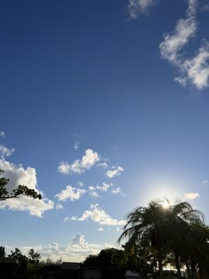

うるがいの話 ある日
最新: 御中元を配る【うるがいの話 ある日】とは 一日だけのプログです
『うるがいの話』の最新一日だけのプログで、通信料が少なく経済的だ。カニの画像をクリックすると全ての日付が載る『うるがいの話』サイトを表示します
|
|
【うるがいの話】 うるがい(ｳﾙｶﾞｲ urugai)とは、『もずくがに』の名前でとても大きくなります。 |
|---|---|
|
|
【カミマヤーの話】 猫のことを方言でマヤーといいます。カミマヤー（kamimayaa）とは、神の猫のことです。 |
|
【たながぁの音楽】 たながぁ（ﾀﾅｶﾞｰ tanagaa）とは手長えびのことで、何種類かあり大きいのは車 エビぐらいになります。 |

|
【ぶながぁの話】 ぶながぁ(ﾌﾞﾅｶﾞｰ bunagaa)とは、赤い髪の毛、赤い身体、そして身長は１ｍ２０ｃｍ ぐらい、川の蟹を食べているの目撃された。場所は沖縄県国頭郡大宜味村のと ある村僕の隣近所に住んでいる爺さんから、聞いた話です。 |
|
|
【ギーマの話】 ギーマ(giima)とは、山原の里山に咲くスズランに似た、 花を付けます。実は食べられます、 気が付くと口の周りが紫になっています。 |
2025年08月30日 (土）御中元を配る
16:19

昨年、仕事をしたらいきなり全力疾走の状態で、直ぐ辞めました
まるで、陸上大会の２百メートルのレースのように・・・・・。
すると，従妹が触れてはいけないものに触れてしまったみたい。
お父さんは、延々と話すから。ん？、８８歳になる叔父さんは国
頭郡でも有名な、走り屋だった！。私の右手に、走り高跳びの正
面飛びのとき、スパイクで穴をあけた（３か所、いまだに消えな
い）というと、叔父さん、イキナリ右足を・・・、ここだよスパ
イクで血がゴゴー、大騒ぎだったと。話が長くなりそうなのでそ
ろそろと、帰ろうとするとこの前、転んで頭と右手を怪我してこ
の前やっと治ったといった。叔父さんは、プールで水泳をしてい
る。しばらくは、大丈夫だ。
その後ヨメ方の２か所を廻る、９０歳を超える夫婦、キャメルの
煙草を吸い始めた叔父さんは、この前転んで右目と左手を・・。
奥さんは、少し認知が・・・、そして９０歳の小母さん（お母さ
んの妹）は、半年前のお義母さんの葬儀のときから比べると、か
なり痩せて老けていた。さて、来年はどうなるでしょう。